Começamos o jogo com um monólogo da nossa personagem principal, Lacie. Durante este monólogo vamos ter algumas opções tanto da bebida e sobremesa.
Essas escolhas parecem não importar, mas surgem em conversas posteriores.
Nada importante, então escolha o que quiser.
Continue assistindo as cenas com Lacie aqui (estou me sentindo muito mal por ela) e eventualmente estaremos de volta para casa.
Eventualmente veremos que temos uma lista de "Coisas para fazer" e já fizemos a primeira (e mais importante): sair. Durante a cena, veremos um corvo na parede. Esses CORVOS atuam como pontos de salvamento e certifique-se de salvar com frequência, pois não há salvamento rápido ou salvamento automático. Há também toneladas de finais e vamos querer obtê-los todos!
Por enquanto salve seu jogo, aproxime-se da casa de pássaros nas proximidades e abra seu menu. Selecione aqui o item que você deseja usar (Comida de pássaro) e use-o em frente ao aviário. Este é mais um dos itens da lista de "Coisas para fazer".
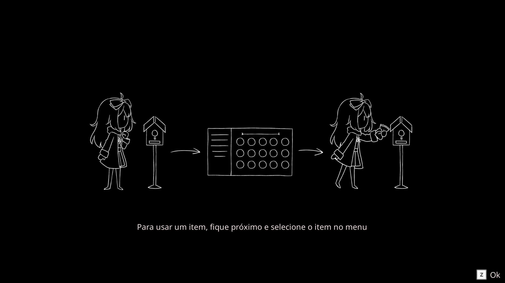Não há muito mais para nós fazermos aqui fora, então vá para dentro de sua casa (pela porta da frente. A porta lateral e a garagem estão fechadas). Uma vez dentro note que você pode interagir com quase tudo. É principalmente texto decorativo, mas ainda assim eu gosto muito.
Uma vez lá dentro, siga para norte pelo corredor e entre na primeira sala à sua direita, a cozinha. Aqui você terá um telefone fixo (eu não vejo um desses na vida real há muito tempo!). Caso queira ligue para a mãe de Lacie e o número dela está abaixo:
195224#1
Depois da conversa, abra a geladeira e coma as sobras que encontrar. Outra parte da lista de tarefas pendentes. Depois de terminá-los, confira a nota aqui na mesa. É aqui que encontramos o número de telefone da mãe. A porta aqui leva à garagem, mas não há nada aqui para nós agora.
Em vez disso, volte para o corredor principal. Sinta-se livre para explorar o resto do primeiro andar: a porta para o norte do lado direito é o banheiro, por enquanto a lavanderia está trancada. Também não há muito na sala de estar e jantar, por enquanto, suba as escadas.
Aqui em cima teremos uma cena loga com Hiro. Eu só vou assumir que Hiro é irmão de Lacie? Eu meio que gosto dele. Me lembra um pouco de brincar com minha própria irmãzinha haha. De qualquer forma, o quarto mais à esquerda é o quarto dos seus pais. Não há nada aqui. Não podemos entrar no quarto do Hiro e a porta à direita também está trancada. Em vez disso, vá para o sul e o primeiro quarto é o banheiro. Novamente, não há nada aqui agora, então continue mais para o sul. Na direita é o quarto de Lacie.
Assim que entrarmos teremos uma pequena cena onde Lacie vai dormir... ou pelo menos ela tenta. Durante a cena, teremos o item Carta Ritual. Bem, parece que precisamos nos preparar para o ritual, mas precisaremos encontrar alguns itens, bem como completar nossa lista de tarefas. Vamos começar.
Claro que você quer começar lendo a carta do seu menu. Isso basicamente diz sobre o ritual e o que vamos precisar. Não se preocupe, é por isso que estou aqui com você.
Enquanto estiver no quarto de Lacie, aproxime-se da janela no canto sudoeste e você notará um pouco de brilho.
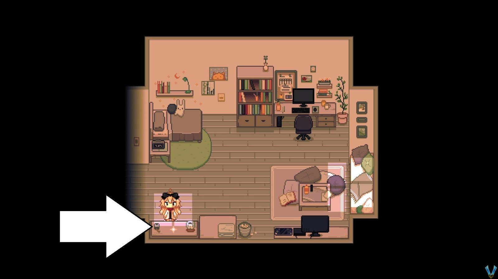Interaja com ele e você verá uma versão muito mais detalhada do que Lacie está vendo. Por enquanto, há várias coisas que queremos pegar aqui:
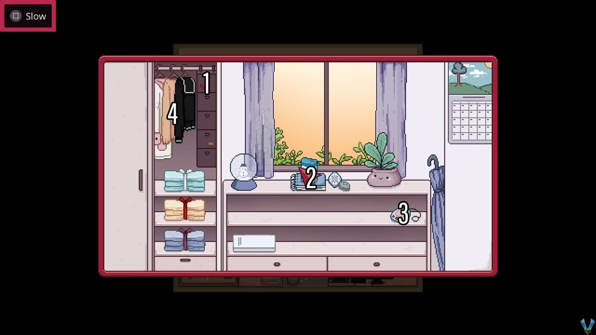Abra-o para localizar uma Faixa de Opções Vermelha. Usado para o ritual.
Itens rituais mais úteis: Caderno, Runa, Sal de Mesa e Maçaneta de Retorno.
Este é o seu TamaGhost. Interaja com ele para alimentar seu animal de estimação (parte da sua lista de tarefas).
Você pode interagir com eles para trocar de roupa. Você pode ver Lacie em roupas diferentes, mas ela sempre mudará de volta.
Nota do autor
Por favor, note que existem 2 outros itens que você pode pegar em vez da Fio Vermelha. Você também pode encontrar um Barbante vermelho (na mesa de cabeceira dentro do quarto de seus pais) ou um Red Shoelace (sapateira na entrada principal). Fui com o Cadarço Vermelho, mas o resultado é o mesmo. Você só precisa ter 1 com você e você só pode pegar 1..
Vá em frente e agora verifique o despertador ao lado da sua cama. Defina o alarme para meia-noite e saia do seu quarto. Siga para o norte e entre no banheiro (ao lado, à sua direita). Dentro vá em frente e verifique a gaveta do lado esquerdo da pia para encontrar algum batom. Vá em frente e leve-o. Você não pode usá-lo, mas você pode levá-lo com você.
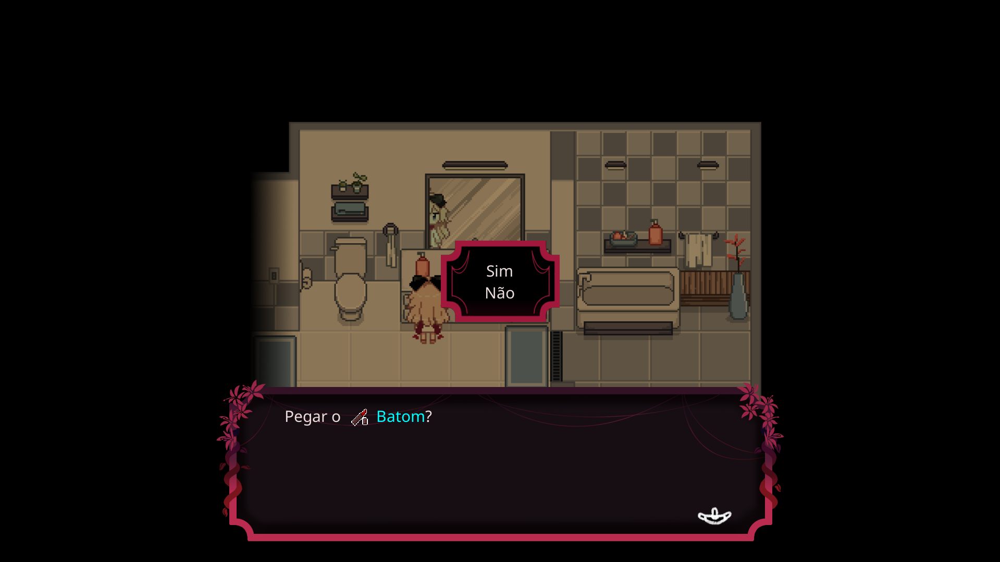Volte para o andar de baixo, vá para o norte e verifique a estante perto da sala de estar para encontrar um marcador vermelho.
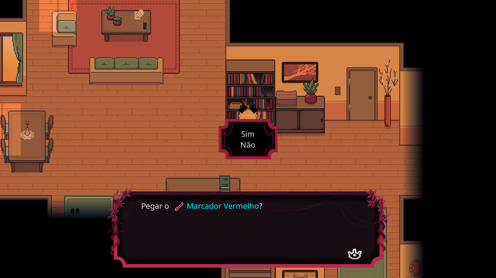Dirija-se agora à cozinha, aproxime-se do telefone, abra o menu e "use" a Fita Vermelha (ou o Fio Vermelho ou o Cadarço Vermelho) para dar um nó no telefone. Depois, dirija-se à garagem e verifique as prateleiras para encontrar a Tinta vermelha. Semelhante ao Fita/Fio/Cadarços, você precisa deste OU do marcador vermelho que acabamos de ter. Só precisamos de um.
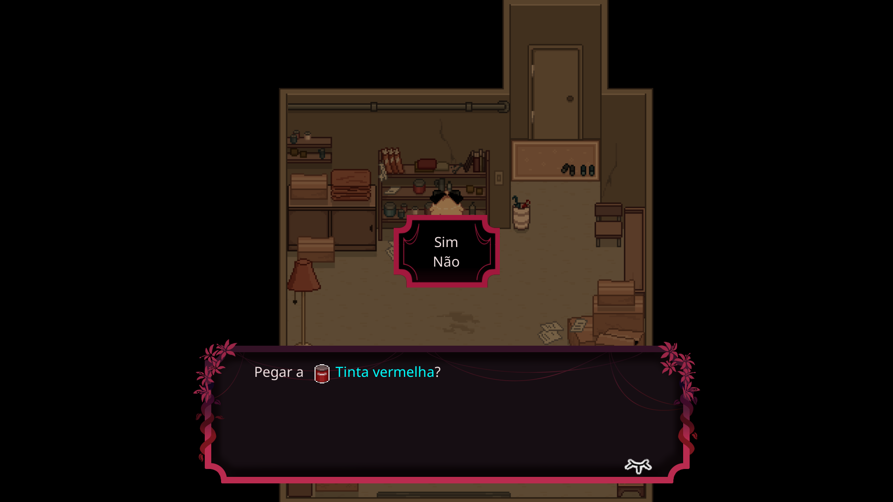Saia agora (onde está o corvo), aproxime-se da entrada principal da casa e abra seu menu para usar o Marcador Vermelho/Tinta Vermelha. Isso criará um símbolo estranho na porta.
Depois de fazer isso, passe pela porta lateral da casa e ao norte você pode encontrar Hiro sentado lendo um livro.
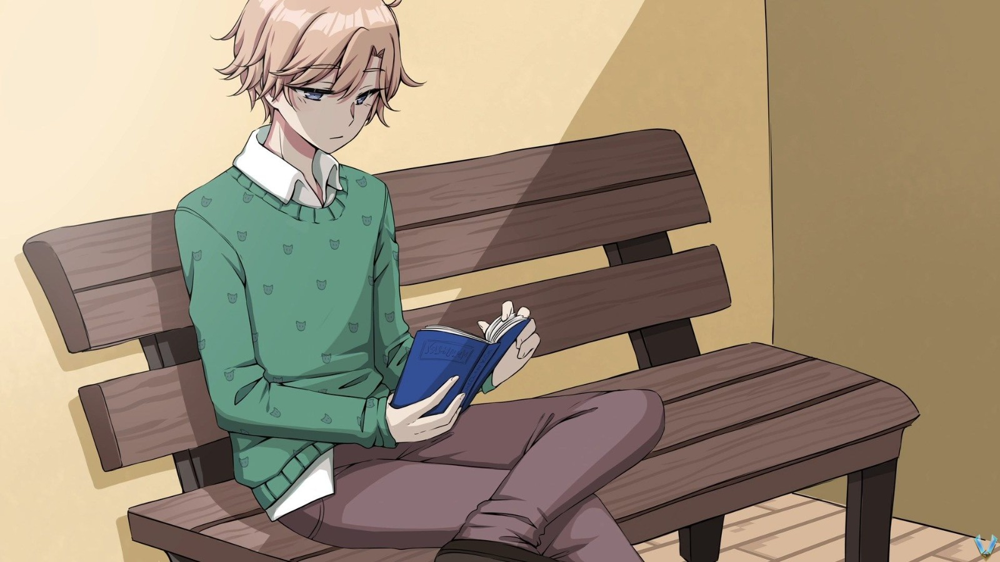Aproveite a cena com ele e assim que terminar fale com ele mais algumas vezes até não conseguir mais.
Infelizmente, um dos nossos objetivos é dizer adeus a Hiro, mas não podemos. Antes de estarmos prontos para dormir, volte e salve seu jogo no corvo. Antes de qualquer coisa, leia a nota super importante abaixo.
Finais de jogo
Paper Lily apresenta, pelo menos agora no momento em que escrevo isso, 16 finais. Esses finais não são "finais" para todo o jogo em si, mas praticamente maneiras de terminar a história de Lacie cedo e, na maioria das vezes, matá-la. Vou escrever cada um deles em suas próprias caixas (semelhante a esta) sempre que estiverem disponíveis para você obter.Tenha isso em mente e tente rolar para baixo um pouco mais do que onde você está atualmente para que você possa se preparar. Se você vir uma dessas caixas de notas com o título "Aviso de Final", então você sabe que terá que estar preparado para fazer algo para obtê-lo. Certifique-se de lê-lo com antecedência, porque alguns deles exigem que você tome medidas rápidas. Todos eles também terão sua própria página, então sinta-se livre para verificá-los lá fora, se você assim desejar!
Agora que conversamos sobre os finais e salvamos nosso jogo, volte para dentro, vá para o seu quarto e vá para a cama. Assista à cena que se desenrola e estaremos na "sequência dos sonhos" de Lacie.
Este lugar parece bastante assustador! Não há muito neste lugar. Temos uma cama no centro e teremos uma pequena parede ao nosso redor com uma pequena escada de cada lado. Suba qualquer uma das escadas e aproxime-se da porta no canto superior esquerdo.
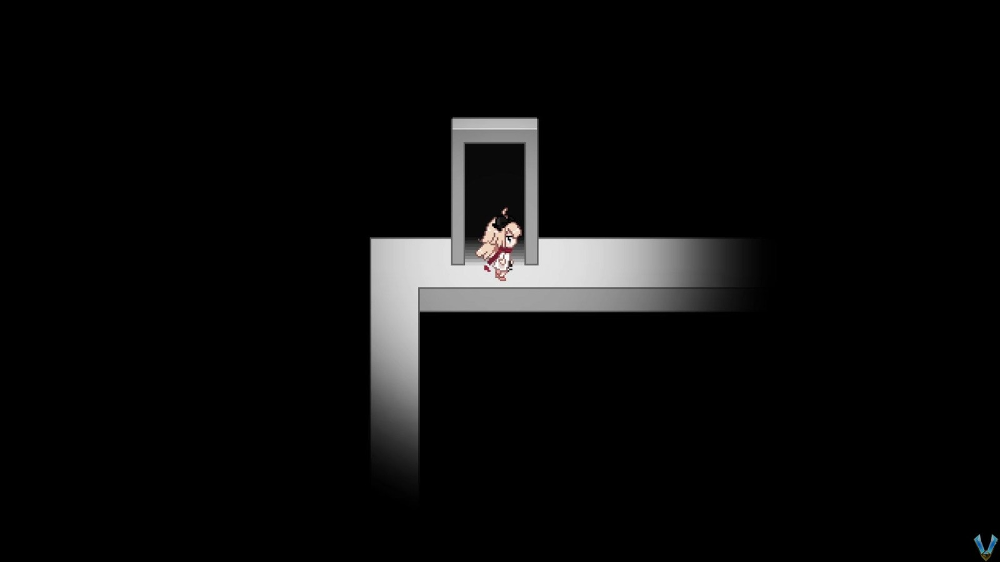Uma vez pela porta, estaremos em um longo corredor com o que parecem janelas ao fundo. Lá na frente tem uma nota no chão, então leia e continue à direita. Você verá várias pessoas atrás das janelas. Lacie sofreu bullying?
Continue e você chegará ao vestiário. Vamos precisar abrir o armário da Lacie... e eu sei que você pode encontrá-lo imediatamente. Vá em frente e abra seu armário e, em seguida, verifique o guarda-roupa na parte de trás para sair da sequência de sonhos.
De volta à realidade, desça as escadas e entre na cozinha. Verifique o telefone e ligue para o número de telefone abaixo. São apenas símbolos, mas você sabe onde estão os números. O # está no canto inferior direito. Após ligar, escolha a resposta abaixo:.
999281#0
Meu ônibus está atrasado
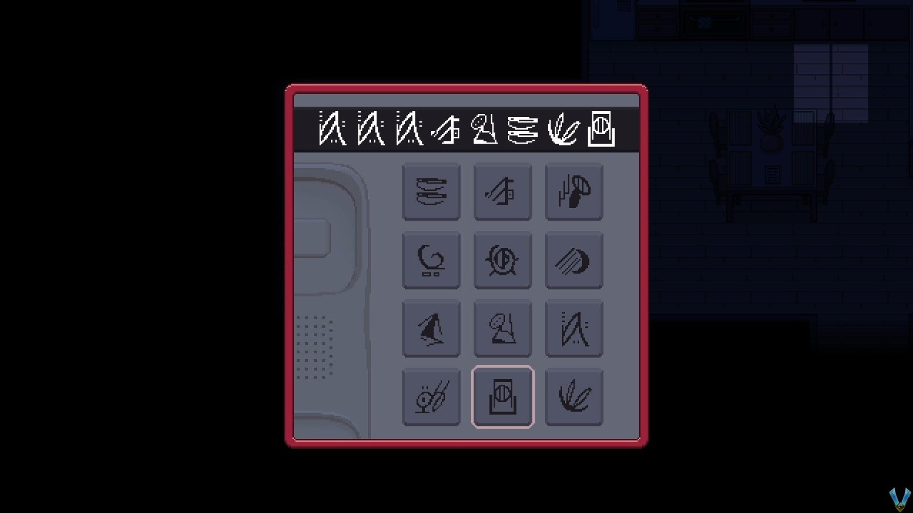Assim que você fizer as duas coisas, um temporizador de 20 segundos aparecerá....
Aviso de Final
Para chegar a este final você PRECISA perder o ônibus. Em outras palavras, basta ficar parado ou correr dentro de casa até que os 20 segundos sejam esgotados. Quando o cronômetro acabar, saia de casa e você não verá ônibus. Lacie mencionará que precisamos limpar as coisas porque deixar o ritual assim seria perigoso. Volte para dentro, suba as escadas e entre no quarto de Lacie. Confira o computador aqui para saber como limpar o ritual.Assim que soubermos, desça as escadas e entre na cozinha. Interaja com o telefone para remover a Faixa de Opções Vermelha. Feito isso, vá para o sul até a garagem, aproxime-se da entrada sul (de onde vem o carro), abra seu estoque e use o sal de mesa para espalhar sobre a entrada.
Volte para o corredor principal e siga para o sul até a entrada principal. Espalhe o sal sobre a entrada, depois siga para o norte e para a esquerda e espalhe mais sal na porta lateral. Esta deve ser todas as 3 entradas.
E após espalhar o sal, vá para o seu quarto e vá para a cama... aproveite o final.
...corra para fora de casa e o temporizador vai desaparecer e o ônibus estará lá esperando por você. CERTIFIQUE-SE de salvar seu jogo, em seguida, interagir com o portão principal e embarcar no ônibus.
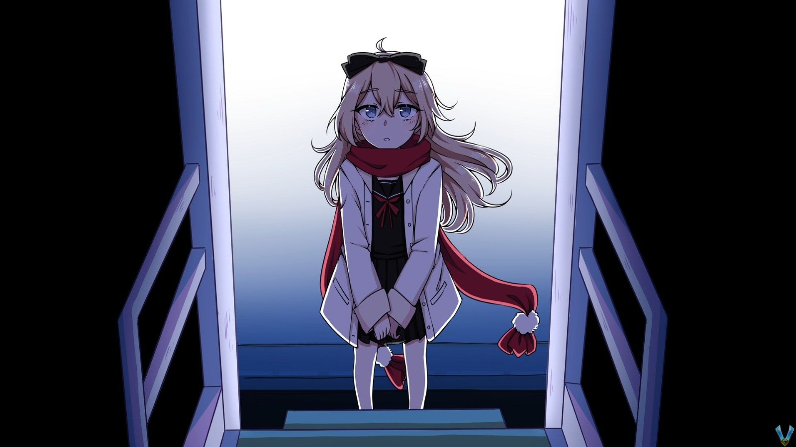Lacie se sentará e acabará desmaiando.
Sim, estamos de volta ao mundo dos sonhos...
Aviso de Final
Para obter este final, quando você recuperar o controle depois de acordar no mundo dos sonhos, vá para o sul e suba a escada para descobrir que há mais 2 escadas indo para o sul (eles anteriormente não estavam aqui).
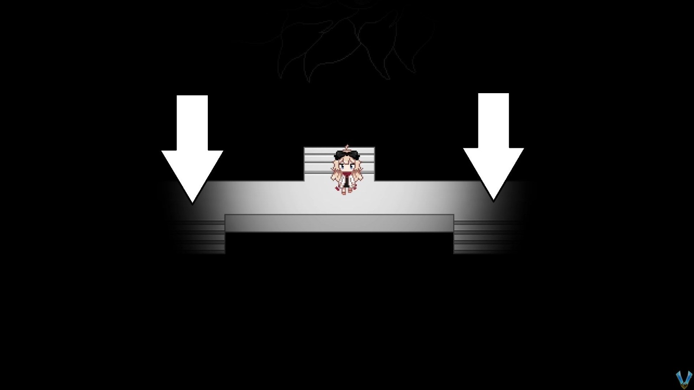Pegue qualquer uma dessas escadas, caminhe para o sul em direção ao nada e volte para o norte. Lacie... vai se perder. As cenas vão continuar andando até recuperarmos o controle onde a cama normalmente está... e não é. A partir daqui, vá para o norte, para onde a grande porta está agora aberta. Passe por isso para obter o final. Cara, eu NÃO gostei nem um pouco disso!
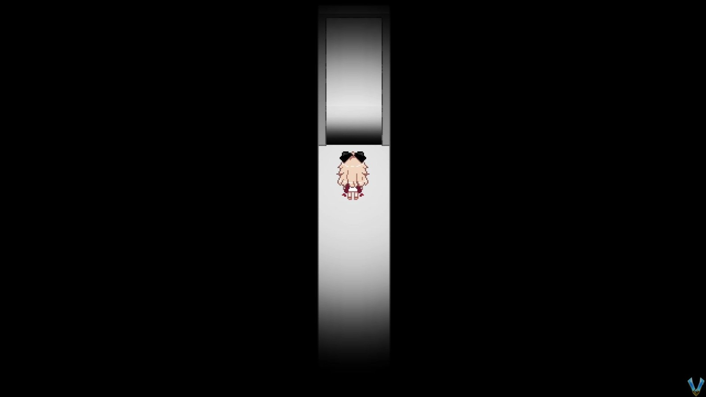...Passe pela mesma porta no canto superior esquerdo e, assim como antes, leia a nota no corredor e siga para o vestiário. Haverá algo diferente agora (você viu?). Vá em frente e abra seu armário novamente e agora você encontrará um Item Vermelho I.
E com isso verifique o guarda-roupa mais uma vez e você estará de volta ao ônibus... as coisas são diferentes. Eventualmente, teremos um temporizador de 10 segundos semelhante ao da casa...
Aviso de Final
Semelhante ao final que voltamos para casa, espere o cronômetro de 10 segundos aqui acabar. Isso desencadeará automaticamente uma cena em que Lacie se sentará e continuará andando de ônibus.
Eventualmente, você recuperará o controle de Lacie e o ônibus estará vazio. Saia do ônibus e seremos... onde estamos? A partir daqui, siga para sul até chegar à próxima área com uma longa escadaria.
Aqui suba as escadas e entre na primeira porta se quiser. Dentro verifique a geladeira (pelo menos eu acho que é uma geladeira de algum tipo) para encontrar uma surpresa.
Volte para fora e siga para o topo das escadas e entre na porta aqui em cima para desencadear uma cena e o final.
... Saia correndo do ônibus antes que os 10 segundos passem e estaremos na entrada de uma floresta. Vamos terminar esta página aqui e começar a próxima!
Próxima Área: Floresta